Criar uma Nova Máquina Virtual
Abra o Oracle VM VirtualBox. No menu superior ou na tela inicial do gerenciador de máquinas, clique no botão azul redondo "Novo" (com a estrela azul destacada) para começar a configurar os recursos necessários.
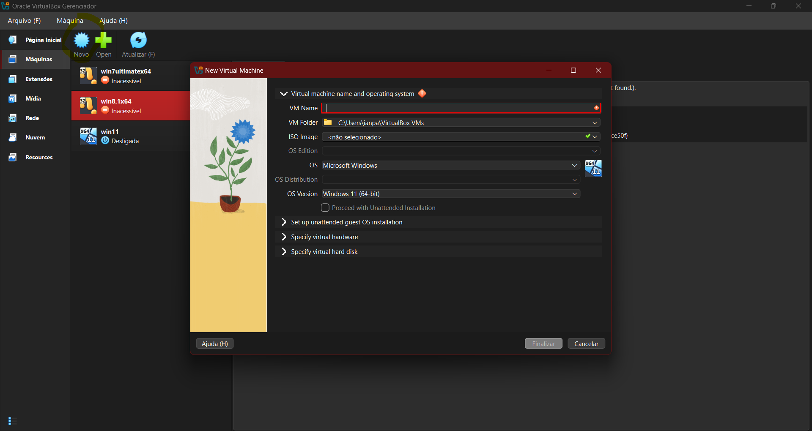
Localizar a Imagem ISO
Dê um nome intuitivo para a sua máquina (como "Linux Mint MATE") e defina o local em que ela ficará guardada. Em "ISO Image", clique no menu de opções e selecione a opção "Outro..." (indicada com a seta vermelha) para abrir o navegador de pastas.
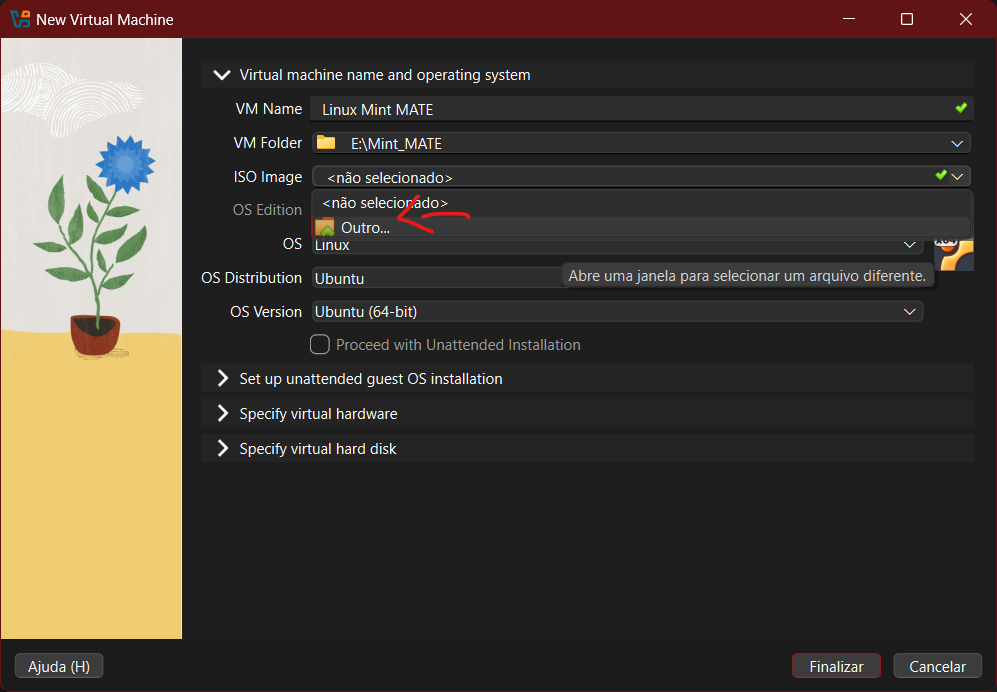
Selecionar o Ficheiro ISO no Explorador
Uma janela de busca do seu sistema de arquivos se abrirá. Navegue até a pasta onde salvou o arquivo baixado (por exemplo, na pasta de ISOs no disco local), clique sobre o arquivo "linuxmint-22.3-mate-64bit.iso" e clique em "Abrir".
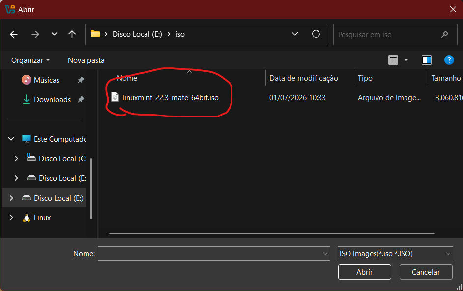
Confirmar Configurações da ISO
Verifique se o arquivo foi carregado com sucesso no campo "ISO Image". As informações de tipo e versão serão ajustadas automaticamente para sistemas Linux. Mantenha as configurações padrões e clique em avançar.
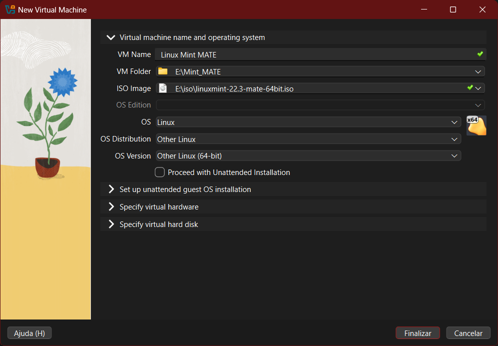
Ajustar Hardware Virtual
Ajuste as configurações de hardware dedicadas à máquina. No exemplo, definimos 8192 MB (8GB) de Memória RAM e 4 processadores (CPUs) virtuais para garantir uma ótima velocidade ao navegar e atualizar o sistema.
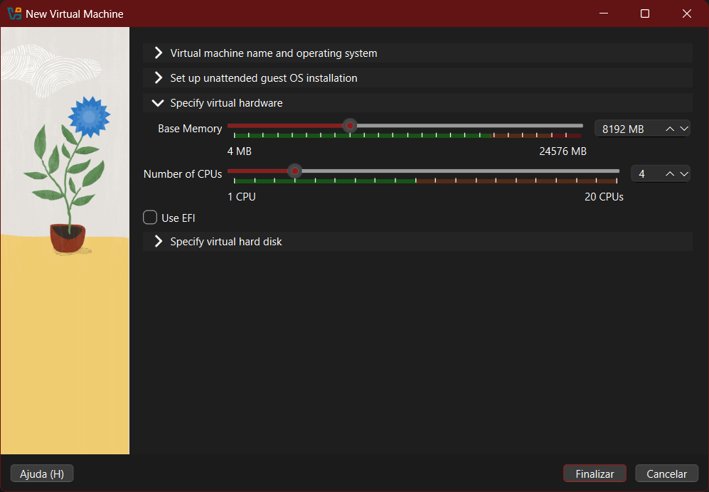
Criar o Disco Rígido Virtual
Selecione a opção "Create a New Virtual Hard Disk" e defina o espaço para o disco virtual (recomendado 60 GB para trabalhar tranquilamente). Mantenha o formato padrão de arquivo de disco em VDI (VirtualBox Disk Image).
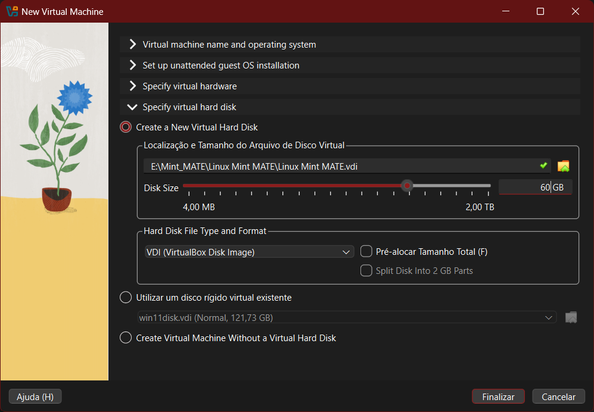
Iniciar a Máquina Virtual
Com a máquina virtual criada com sucesso e listada no painel esquerdo do VirtualBox Manager, selecione a máquina "Linux Mint MATE" e clique no botão verde com a seta para a direita "Iniciar" no menu superior para ligar a VM.
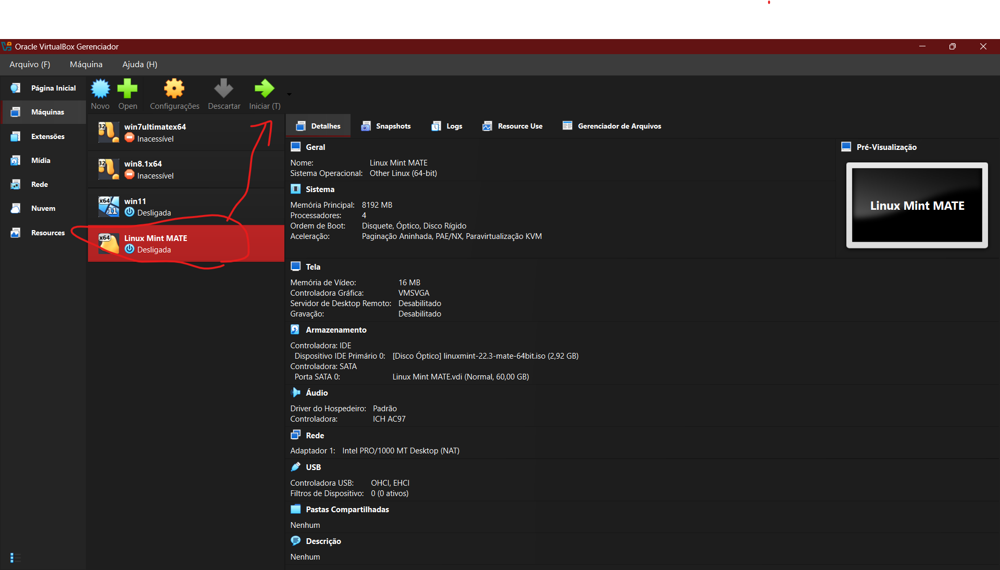
Inicialização da Máquina (GRUB)
A máquina virtual será inicializada. No menu do gerenciador de boot (GRUB) que se exibe em tela preta, mantenha a opção padrão selecionada: "Start Linux Mint" e dê Enter.
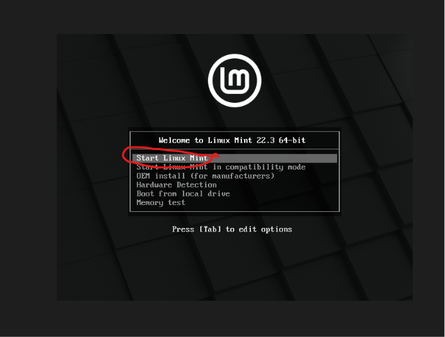
Iniciar o Instalador no Desktop Live
A área de trabalho "Live" do Linux Mint MATE se carregará em seguida. Clique duas vezes no ícone de CD redondo no canto superior esquerdo escrito "Install Linux Mint" para abrir a aplicação oficial de instalação do sistema.
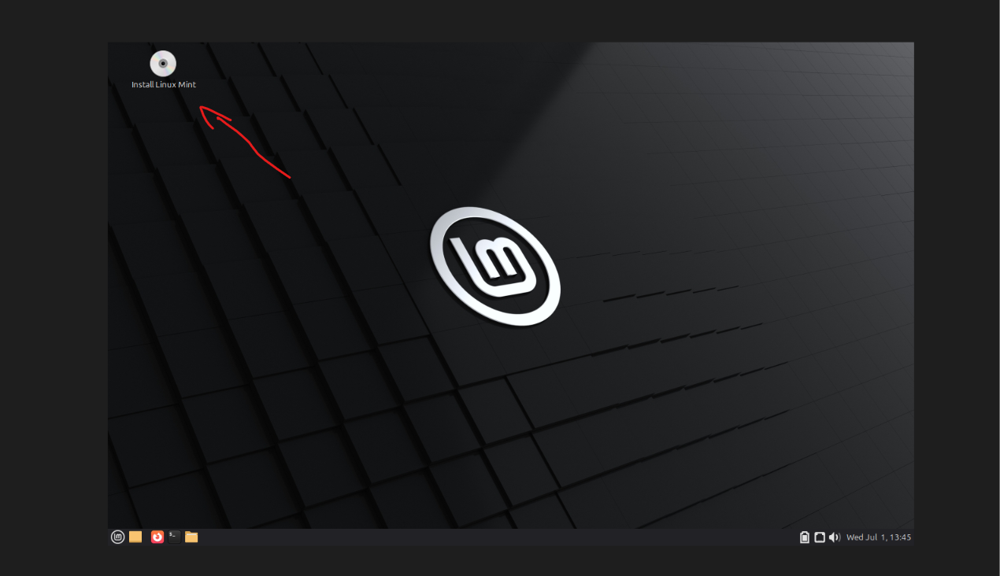
Escolher o Idioma Inicial
A janela principal de boas-vindas do assistente será exibida em seu ecrã. Na lista lateral de idiomas do lado esquerdo, role para baixo para encontrar o idioma correspondente ao seu país.
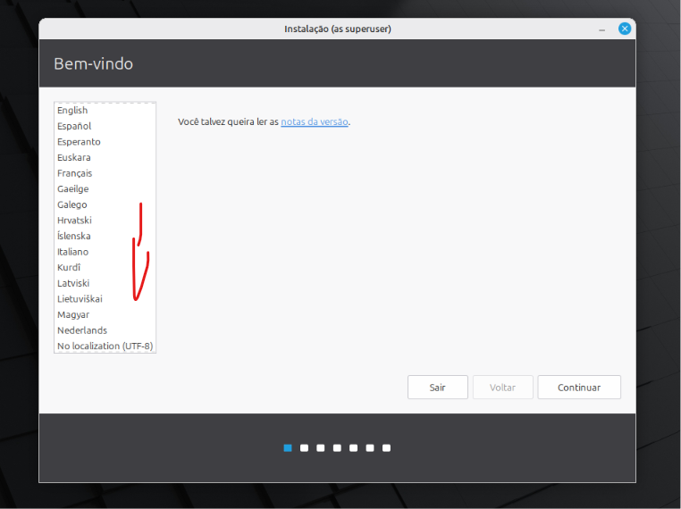
Selecionar Português do Brasil
Encontre e selecione a opção "Português do Brasil" na lista de idiomas para traduzir todos os menus e ferramentas integradas do sistema. Após marcar, clique no botão para avançar.
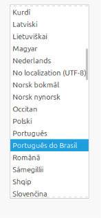
Configuração do Layout do Teclado
Configure o padrão correspondente às teclas do seu teclado físico. Para modelos nacionais com a tecla "Ç", a opção mais indicada é Portuguese (Brazil). Você pode digitar alguns caracteres no campo de testes abaixo para comprovar a configuração.
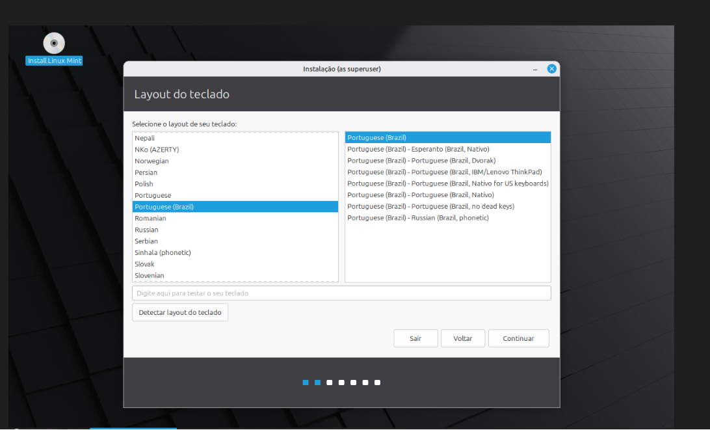
Codecs de Multimídia
Marque a opção "Instalar codecs multimídia". Estes drivers adicionais dão suporte à decodificação de vários formatos de arquivos de vídeo e componentes multimídia em páginas web de forma nativa. Clique em "Continuar".
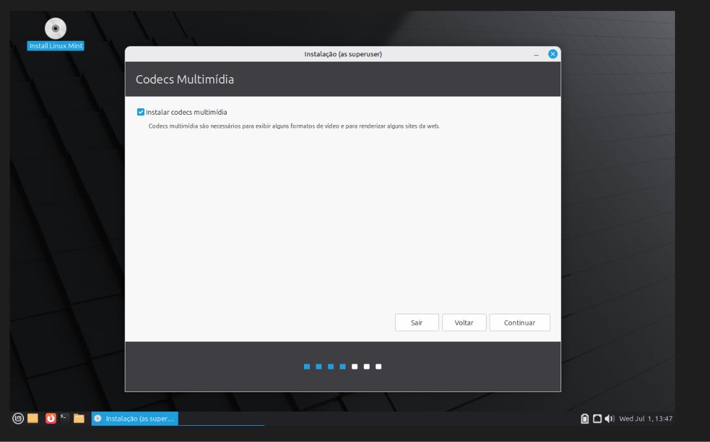
Tipo de Instalação
Escolha a opção padrão de particionamento "Apagar disco e reinstalar o Linux Mint". Lembre-se que essa operação formatará apenas o seu disco virtual de 60GB criado no Passo 6. Em seguida, clique no botão "Instalar agora" no canto inferior direito.
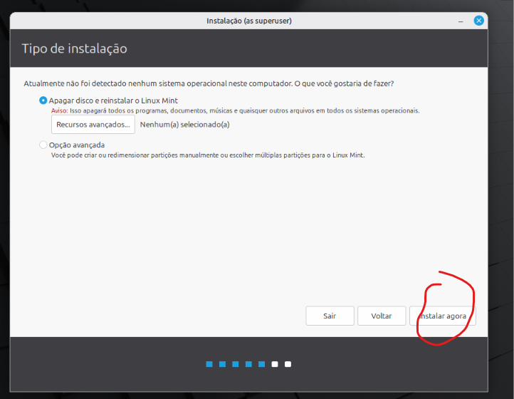
Configuração do Fuso Horário
Configure a localização geográfica para ajustar as informações de hora e fuso horário do sistema operativo. No exemplo, definimos São Paulo como a região base de horário. Confirme as informações e clique em avançar.
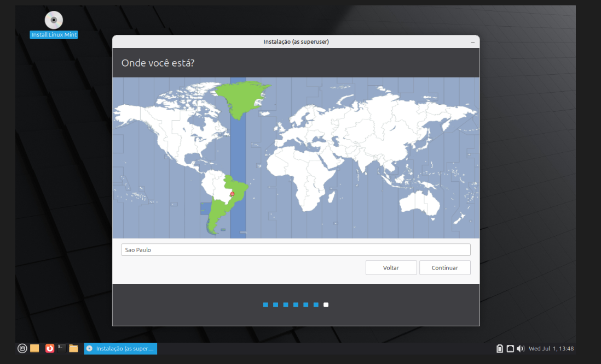
Dados do Utilizador (Criar Perfil)
Introduza os dados pessoais de acesso do sistema. No exemplo, criámos o utilizador "senac", associado ao nome de computador senac-VirtualBox. Lembre-se de definir uma senha segura e marcar "Solicitar minha senha para entrar" para garantir a segurança da VM.
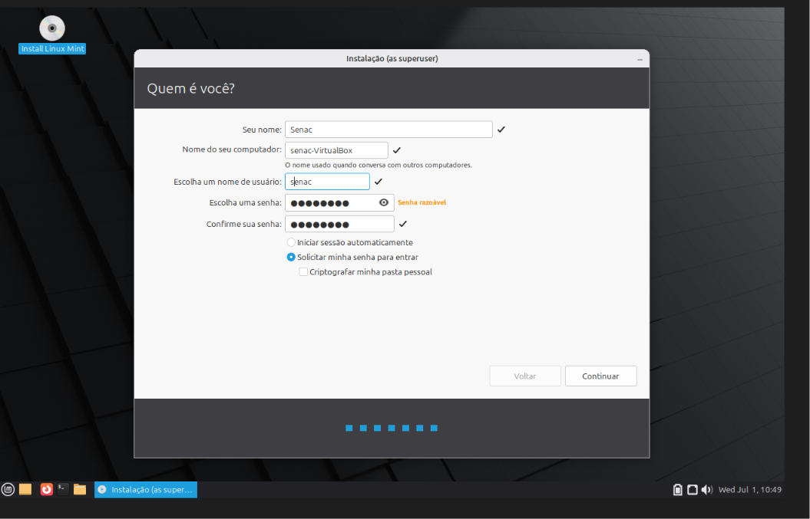
Instalação Concluída
Aguarde alguns minutos adicionais até que a barra de cópia e descompactação termine de rodar por completo. A caixa de diálogo confirmará que o processo acabou com êxito. Clique em "Reiniciar agora".
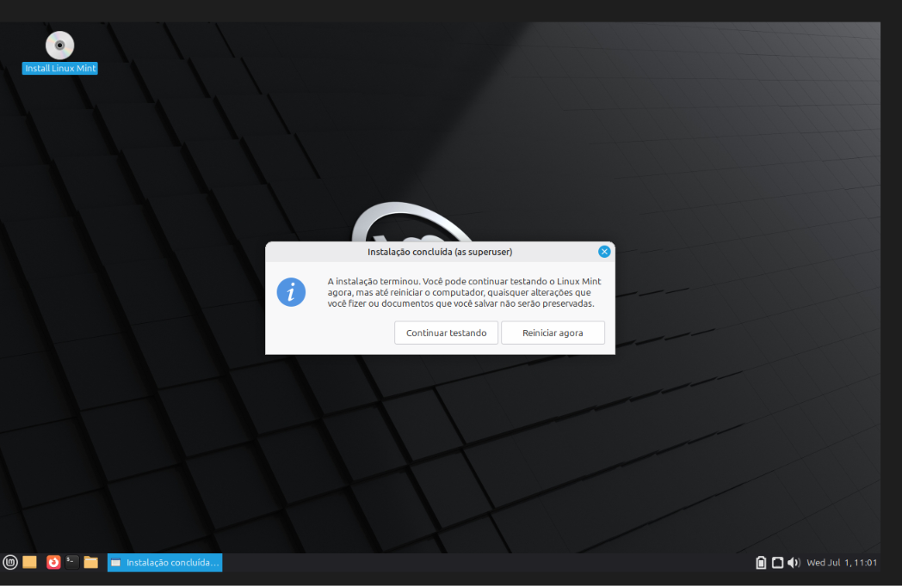
Remover Mídia de Instalação
Antes de reiniciar de forma definitiva para o seu disco virtual rígido, a linha de comandos solicitará que remova a ISO: "Please remove the installation medium, then press ENTER:". Basta dar a tecla Enter no seu teclado físico.
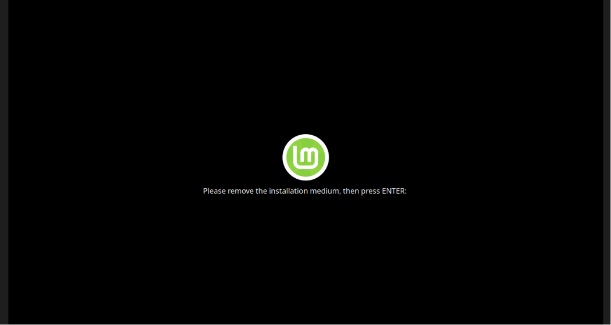
Ecrã de Login Inicial do Linux Mint
Excelente! O seu sistema foi inicializado com sucesso e agora está instalado e seguro no HD. O utilizador "Senac" aparecerá por padrão na tela de boas-vindas gráfica. Introduza a senha definida no Passo 16 e pressione Enter.
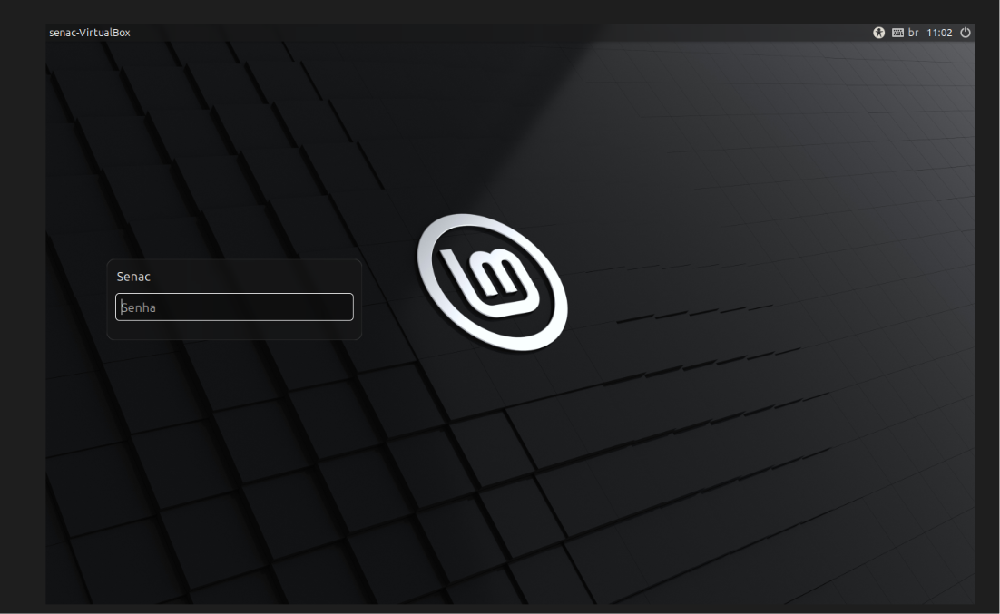
Primeiros Passos e Boas-Vindas
A janela de primeiro acesso será aberta com uma guia estruturada sobre documentação e primeiros passos. Recomendamos desmarcar a opção "Mostre esta tela de boas-vindas ao iniciar o Linux Mint" no rodapé da janela antes de fechá-la no botão de "X" superior destacado em vermelho.
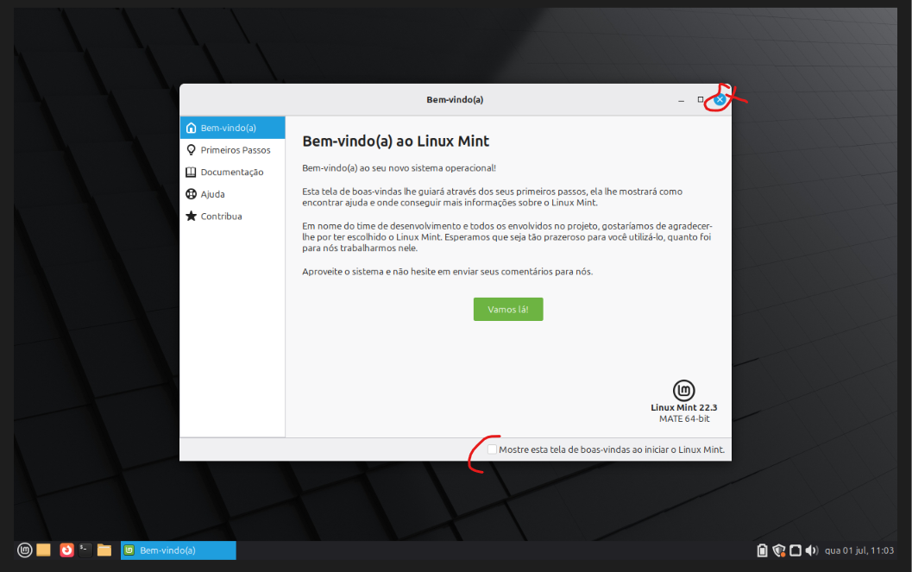
Iniciando a Linha de Comandos (Terminal)
No Linux, manter o seu sistema em dia é muito rápido através de comandos de atualização direta. Para abrir a linha de comandos, localize o ícone retangular com os caracteres ">_" na barra de tarefas inferior e clique uma vez sobre ele (conforme indicado com a seta vermelha).
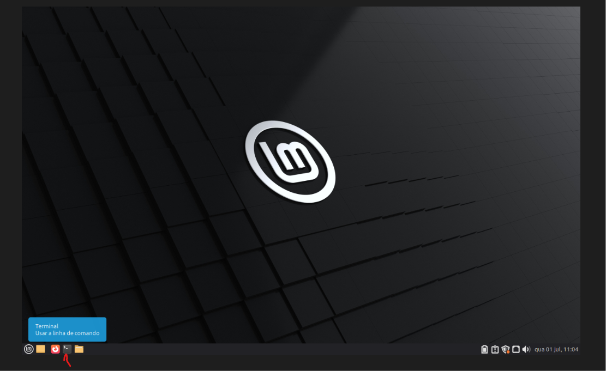
Comando de Atualização Completa
Com o utilitário de terminal aberto, digite a instrução de atualização que combina a verificação de repositórios ao download e aplicação de pacotes mais recentes:
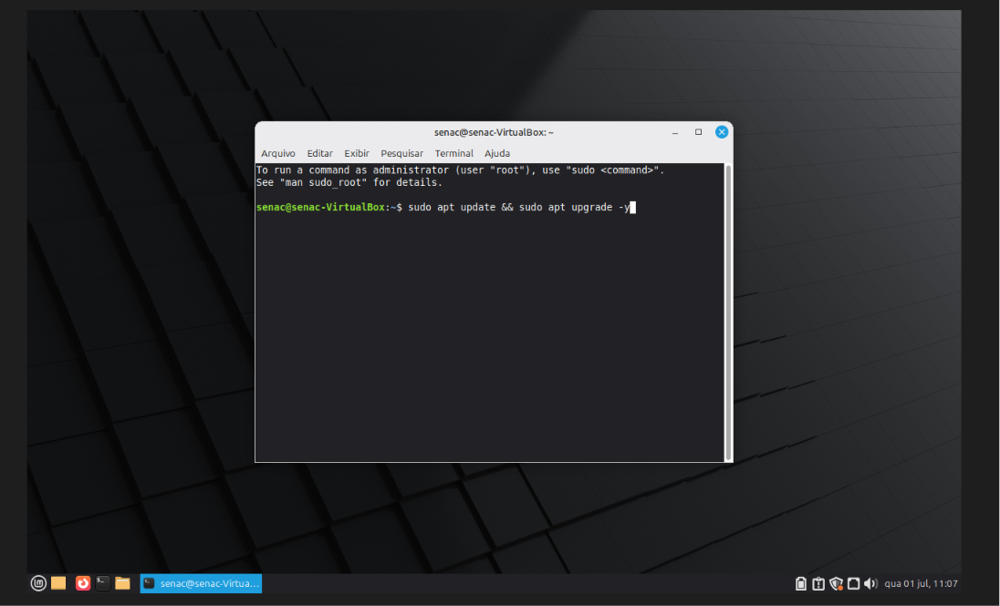
Autenticar no Terminal via Superutilizador (sudo)
Por motivos de segurança cibernética, o utilitário do sistema solicitará a sua senha de acesso. Digite a sua senha criada no passo 16 de forma oculta. Note que os caracteres da sua senha não se movem ou aparecem na tela por questão de privacidade visual, apenas dê Enter após digitar.
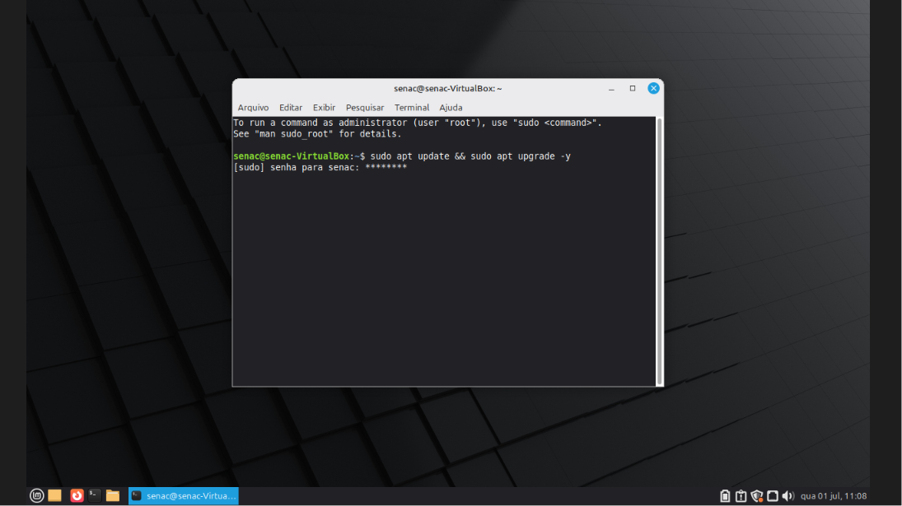
Ferramenta Gráfica de Atualizações
Além do prático terminal de comandos, o Linux Mint oferece uma ferramenta integrada extremamente didática. Abra o Gerenciador de Atualizações gráfica no painel de controle. Ele exibirá guias úteis para prevenção automática de vulnerabilidades, patches rápidos de segurança e ferramentas automáticas para recuperar regressões de erros (snapshots). Clique em "OK".
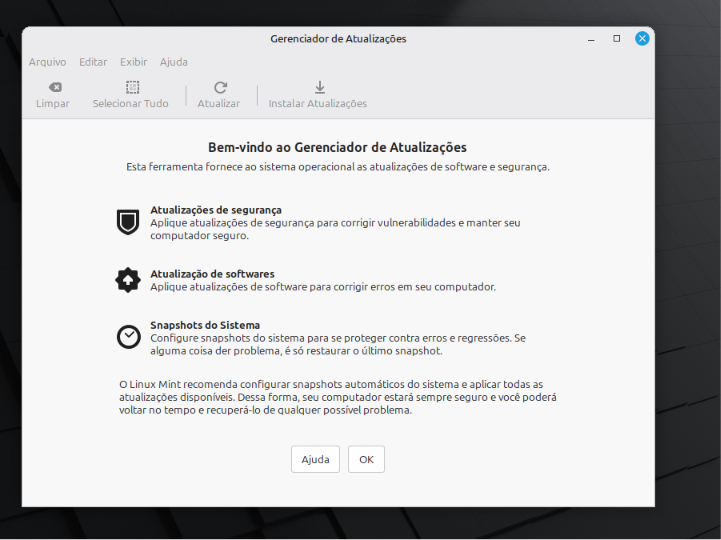
Verificação de Sucesso (Sistema Atualizado)
A ferramenta gráfica rodará em segundo plano de forma síncrona com o terminal. Uma vez aplicados todos os patches, o utilitário gráfico exibirá um visto visto centralizado confirmando: "Seu sistema está atualizado". Clique no botão azul "X" superior (conforme destacado em vermelho na imagem) para fechar.
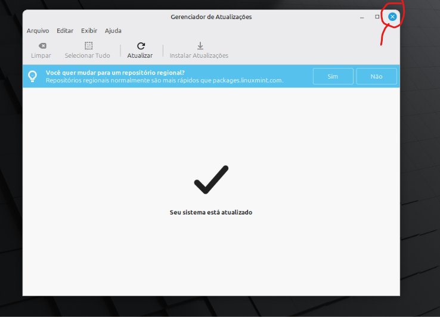
Conclusão de Pacotes no Terminal
De volta ao Terminal de comandos, você poderá ver o log completo de instalação do seu Kernel Linux que rodou em segurança, o carregador de inicialização grub atualizado com a imagem e os módulos do módulo dkms compilados. Quando o prompt de comando retornar a linha senac@senac-VirtualBox:~$, as atualizações foram concluídas com perfeição. Clique em fechar (X destacado) no topo.
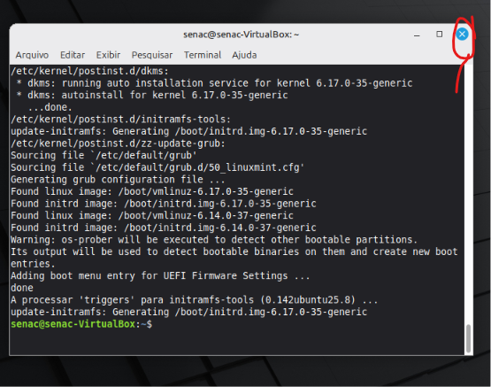
Aceder ao Gerenciador de Aplicativos (Loja Oficial)
Para personalizar seu novo ambiente virtual MATE com softwares adicionais educativos ou de trabalho práticos, abra o menu principal e selecione a ferramenta "Gerenciador de Aplicativos". A loja de softwares se abrirá expondo dezenas de ferramentas como o cliente FTP gráfico completo "Filezilla", utilitários, reprodutores e programas adicionais para a sua rotina!
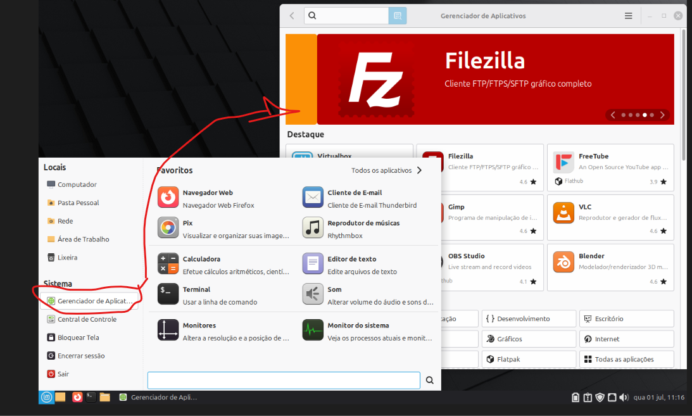